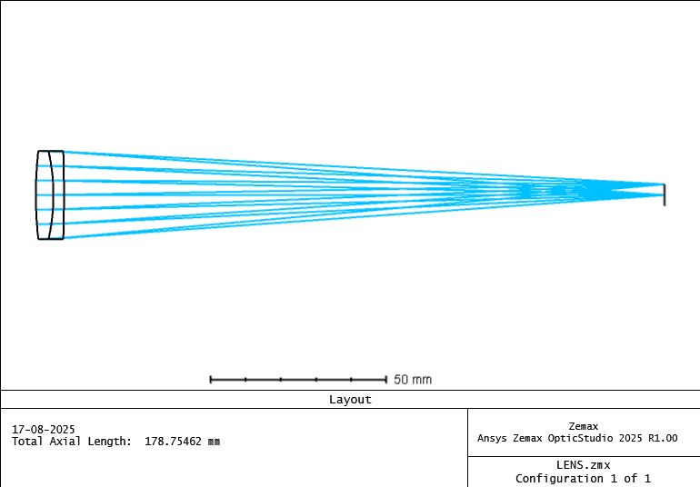
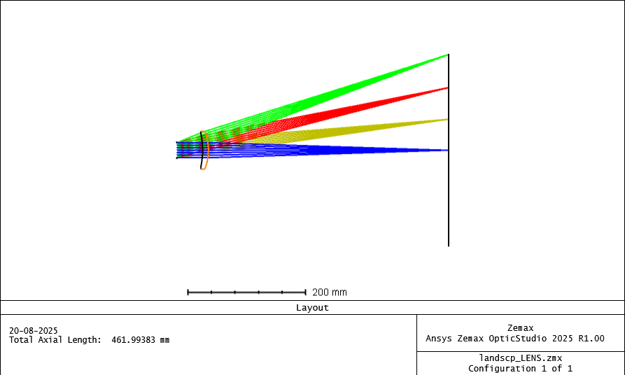
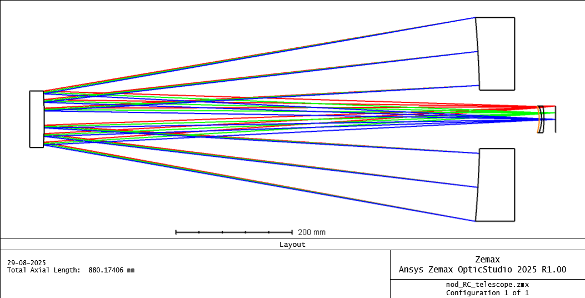

Achromatic Doublet
This project focuses on the design and analysis results for an achromatic doublet lens using Zemax OpticStudio.
View Full Report

Wollaston landscape Lens
A simple early photographic lens that provides a wide field of view with improved sharpness compared to simple lenses.
View Full Report

Ritchey–Chrétien Telescope
A specialized type of reflecting telescope that uses hyperbolic primary and secondary mirrors to minimize optical aberrations..
View Full Report